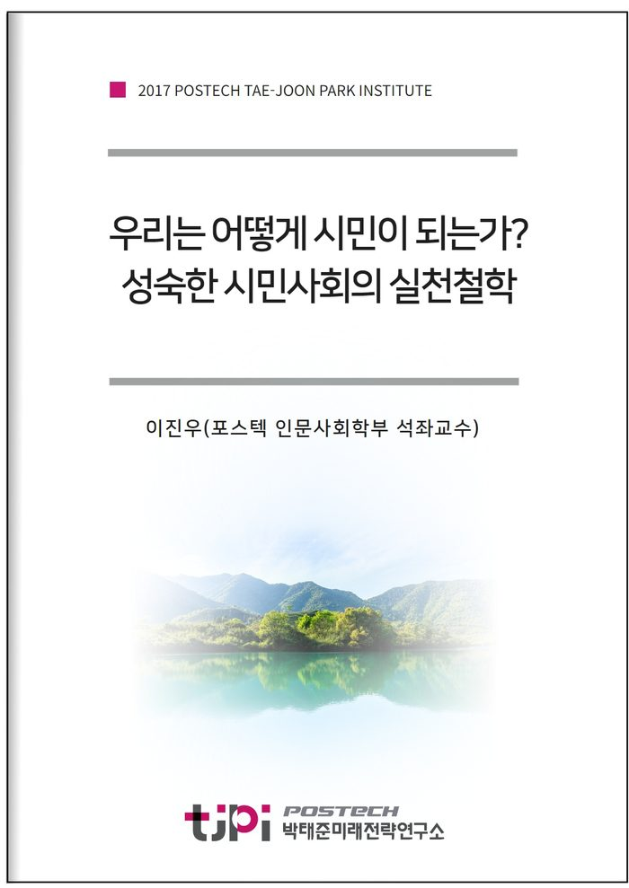

저자 이진우(포스텍 인문사회학부 석좌교수)보도일 2017-11-01

요 약
￭ “더 좋은 사회”(Better Society)에 관한 성찰은 현재 한국사회의 문제점을 분석하고 인간다운 삶이 가능한 바람직한 사회에 관한 규범적 방향의 제시를 목적으로 한다. 이제까지 사회에 관한 논의는 서구 중심적 시각에서 서구의 사회를 ‘선진사회’로 규정하고, 이 사회의 특징에 따라 사회발전의 방향을 설정해 온 것이 사실이다. 서구 선진사회의 특징은 일반적으로 “민주주의”와 “자본주의”의 결합으로 서술된다. 간단히 말해 사회경제적으로 풍요롭고 개인들의 삶을 자유롭게 발전시킬 수 있는 민주적 문화가 성숙한 사회가 ‘좋은 사회’ 또는 ‘선진 사회’로 평가되어 왔다. 이러한 입장은 두 가지 문제점을 안고 있다. 하나는 서구 선진사회조차 현재 많은 모순과 문제점을 표출하고 있다는 사실이며, 다른 하나는 서구 중심적 관점에서 사회를 평가하는 오리엔탈리즘은 “더 좋은 사회”를 실현할 수 있는 다양한 가치와 자원을 경시하거나 간과한다는 점이다. 그러므로 우리는 서구의 선진사회를 모방하거나 추수하는 태도를 지양하고 새로운 관점에서 “더 좋은 사회”에 관한 담론을 발전시킬 필요가 있다.
￭ 한국사회는 해방 이래 식민 지배를 경험한 나라들 중에서 선진사회를 발돋움한 유일한 나라이다. 우리는 매우 짧은 시간에 자력으로 자본주의와 민주주의를 동시에 발전시켰다. 그러나 이러한 압축 성장은 동시에 수많은 문제점을 야기하였다. 서양의 자본주의가 프로테스탄티즘의 윤리에 기반을 두고 있다면 한국의 자본주의에는 이에 부합하는 윤리의식이 결여되어 있으며, 서양의 민주주의가 하나의 문화로서 사회의 각 영역에 뿌리를 내리고 있다면 한국의 민주주의는 형식적으로만 실현되고 있을 뿐이다. 이런 맥락에서 “더 좋은 사회”는 새로운 문화를 창조할 수 있도록 자본주의와 민주주의를 윤리적으로 결합시키는 것이다. 더 좋은 사회를 실현하기 위해 우리가 필요한 것은 바로 “압축 성숙”이다.
￭ “더 좋은 사회”를 위한 압축성숙은 개인과 공동체의 조화를 필요로 한다. 현재 한국사회를 분열시키고 있는 사회양극화는 ‘윤리 없는 개인주의’, 즉 극단적 이기주의를 조장하고 있으며, 이러한 과정에서 한국의 전통적 강점이라고 할 수 있는 공동체주의마저 집단이기주의로 변질되고 있다. 본 연구는 이러한 문제점으로부터 출발하여 개인과 공동체가 어떻게 조화를 이뤄야 더 좋은 사회를 실현할 수 있는지를 집중적으로 고찰하고자 한다.
목 차
1. 한국 시민사회의 현주소: 우리에게 시민은 있는가?
2. 한국 시민사회의 이중성: 국가중심주의와 ‘개인이 없는 시민사회’
2.1. ‘개인’의 탄생과 서구 시민사회의 형성
2.2. 한국 시민사회의 기형적 이중성: ‘시민 없는 국민국가’와 ‘개인 없는 시민사회’
3. 시민권과 공론영역의 사회적 구조
3.1. 사적 개인의 공적 성격과 시민권
3.2. 균형 잡힌 건강한 시민사회의 구조
3.3. 혼합 시민사회의 건강과 병리적 현상
4. 성숙한 시민사회의 실천전략
참고문헌
내 용
[2017 연구논문] 우리는 어떻게 시민이 되는가? ― 성숙한 시민사회의 실천철학 ―
이진우(포스텍 인문사회학부 석좌교수)
- 연구내용은 미래전략연구총서 9 [촛불 너머의 시민사회와 민주주의] 에서 보실 수 있습니다.